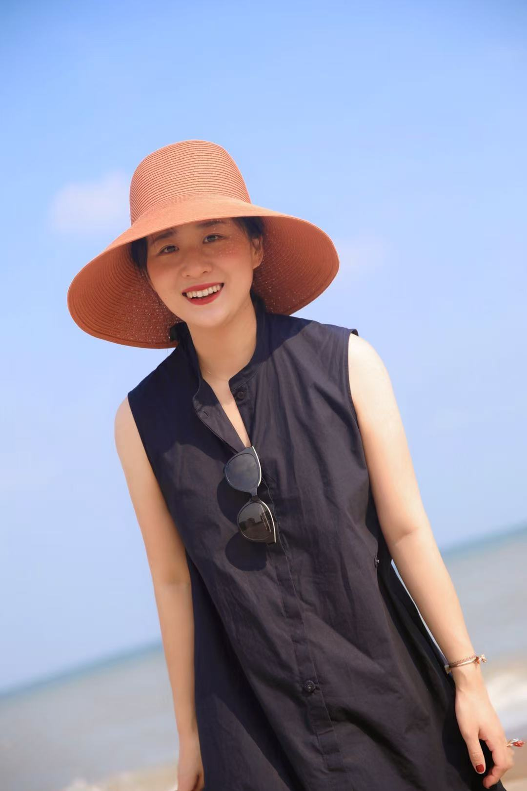

设计师、主理人、创始人
在天津持续推进多个品牌的设计规划与运营，将视觉语言、空间体验和日常服务连接起来。

Illustrator / Brand Founder
插画设计师 · 创意工作室主理人 · 冰激凌品牌主理人 · Bistro 主理人
用画笔与风味，为日常增添一抹温度
上海 / 天津
Career Path
在天津持续推进多个品牌的设计规划与运营，将视觉语言、空间体验和日常服务连接起来。
参与上海本土冰激凌品牌 Fluffy 的设计研发，以轻盈、柔软的视觉回应品牌气质。
在跨文化生活与艺术训练中积累审美经验，也把法式日常的松弛与温度带回创作实践。
Current Focus
主理人
天津五大道常德道
一家温馨的法式小酒馆，在五大道的街角，留住轻松的晚餐时刻。
合伙人
天津五大道成都道
主打地道意大利西餐，把小洋楼里的风味日常做得亲切而有层次。
主理人
成都道 / 棉三
专注意式 Gelato，以清爽、细腻的甜，把旅途里的味道带回城市日常。
Selected Works
About Me
插画、绘画、手工，都是我观察世界、整理情绪的方式。
喜爱各种花花草草，也喜欢它们带来的缓慢秩序。
享受长时间睡眠，让身体和灵感一起恢复明亮。
确实如此，也愿意把这份坦诚留在自我介绍里。